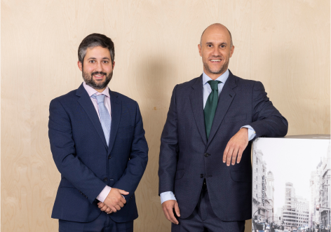
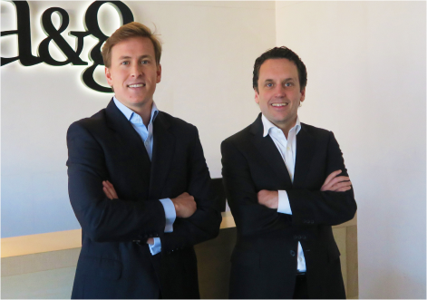
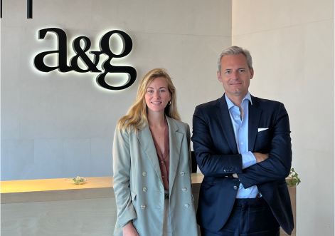
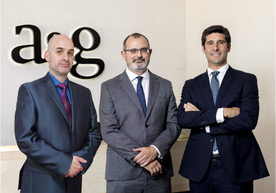
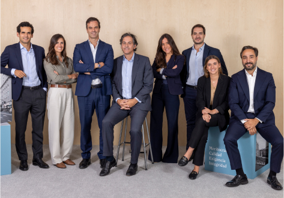

estamos trabajando en nuestra página...
Estamos mejorando para brindarle la mejor experiencia. Gracias por su comprensión
si quiere más información de alguno de nuestros fondos no dude en ponerse en contacto.
contactarFondos de Inversión

Juan y Manu
Román González y Rubén Ayuso
Paradigma Conservative Multi-Asset es uno de los fondos conservadores más flexibles del mercado, cuyo objetivo principal es la preservación de capital a través de un riguroso proceso de control de riesgo.
Nuestro modelo sistemático de inversión nos permite reaccionar rápidamente a los cambios en las condiciones del mercado. Fondo ideal para aquel inversor que busque batir a los tipos de interés con un riesgo muy controlado.
información comercialJuan y Manu
Román González y Rubén Ayuso
Paradigma Conservative Multi-Asset es uno de los fondos conservadores más flexibles del mercado, cuyo objetivo principal es la preservación de capital a través de un riguroso proceso de control de riesgo.
Nuestro modelo sistemático de inversión nos permite reaccionar rápidamente a los cambios en las condiciones del mercado. Fondo ideal para aquel inversor que busque batir a los tipos de interés con un riesgo muy controlado.
información comercialJuan y Manu
Román González y Rubén Ayuso
Paradigma Conservative Multi-Asset es uno de los fondos conservadores más flexibles del mercado, cuyo objetivo principal es la preservación de capital a través de un riguroso proceso de control de riesgo.
Nuestro modelo sistemático de inversión nos permite reaccionar rápidamente a los cambios en las condiciones del mercado. Fondo ideal para aquel inversor que busque batir a los tipos de interés con un riesgo muy controlado.
información comercial
Paradigma Flexible Bonds
Germán García e Ignacio Lena
Fondo de Renta Fija Flexible que invierte fundamentalmente en divisa euro. Gestión activa en renta fija con un enfoque dinámico para ofrecer rentabilidades atractivas a clientes conservadores, con una duración media de cartera entre 0 y 7 años y una calificación crediticia media de grado de inversión.
Gestión muy activa tanto del riesgo de crédito como de tipos de interés, con un cuidado análisis tanto de los emisores, como también de las diferentes tipologías de bono de cada emisor y plazos que mejor se pueden adaptar a cada momento del ciclo económico, empresarial y de política monetaria.
información comercial
Paradigma Value Catalyst Equity
Andrea Gallo y Andrés Allende
Fondo de renta variable global que a través de una cartera concentrada y con baja rotación de las inversiones, aspira a lograr rentabilidades superiores al mercado en su horizonte temporal de 3-5 años.
El estilo es en muchos sentidos el mismo que el de private equity, pero en empresas cotizadas, lo cual permite aprovechar mejor la irracionalidad temporal del mercado. Además de la valoración atractiva, destacan la búsqueda de catalizadores concretos en las compañías en cartera y un proceso de construcción de carteras y gestión del riesgo poco habitual en este tipo de fondos.
información comercialParadigma Value Catalyst Equity
Andrea Gallo y Andrés Allende
Fondo de renta variable global que a través de una cartera concentrada y con baja rotación de las inversiones, aspira a lograr rentabilidades superiores al mercado en su horizonte temporal de 3-5 años.
El estilo es en muchos sentidos el mismo que el de private equity, pero en empresas cotizadas, lo cual permite aprovechar mejor la irracionalidad temporal del mercado. Además de la valoración atractiva, destacan la búsqueda de catalizadores concretos en las compañías en cartera y un proceso de construcción de carteras y gestión del riesgo poco habitual en este tipo de fondos.
información comercialParadigma Value Catalyst Equity
Andrea Gallo y Andrés Allende
Fondo de renta variable global que a través de una cartera concentrada y con baja rotación de las inversiones, aspira a lograr rentabilidades superiores al mercado en su horizonte temporal de 3-5 años.
El estilo es en muchos sentidos el mismo que el de private equity, pero en empresas cotizadas, lo cual permite aprovechar mejor la irracionalidad temporal del mercado. Además de la valoración atractiva, destacan la búsqueda de catalizadores concretos en las compañías en cartera y un proceso de construcción de carteras y gestión del riesgo poco habitual en este tipo de fondos.
información comercial
Paradigma Stable Return
Bernardo Barreto, Miguel Mayo y Germán Molina
Fondo multiactivo moderado, con un nivel de riesgo medio-bajo, diseñado para asistir a los inversores en la protección y crecimiento de su capital. Invierte de manera activa y ágil en una cartera de renta variable y fija altamente diversificada. Busca ofrecer a los inversores la posibilidad de crecer su patrimonio de una forma más amplia y estable.
El posicionamiento muy dinámico permite al fondo adaptarse a los cambios del entorno del mercado, con el objetivo de capitalizar en períodos favorables y proteger durante los desfavorables, con un proceso de inversión darwinista, basado en la creencia de que no sobrevive el más inteligente, ni el más fuerte si no el que se adapta mejor a los cambios de su entorno.
información comercialParadigma High Income Bonds
Germán García
Fondo de Renta Fija Flexible Global. Gestión activa en renta fija con un enfoque flexible para ofrecer rentabilidades atractivas a clientes con perfil moderado que quieran invertir en renta fija con un enfoque de gestión más flexible, aspirando en el medio plazo a retornos superiores a los mercados tradicionales de bonos. Política de inversión muy amplia, no teniendo límite de duraciones y pudiendo invertir hasta un 75% de cartera en emisiones sin grado de inversión.
Gestión muy dinámica tanto del riesgo de crédito como de tipos de interés, con un cuidado análisis tanto de los emisores, como también de las diferentes tipologías de bono de cada emisor y plazos que mejor se pueden adaptar a cada momento del ciclo económico, empresarial y de política monetaria.
Criptomonedas FIL
Román González y Rubén Ayuso
Criptomonedas FIL es el primer fondo europeo de Criptomonedas con liquidez diaria para inversores profesionales. Las criptomonedas han experimentado un fuerte crecimiento en los últimos años, lo que ofrece la posibilidad de obtener altos rendimientos con una volatilidad muy elevada.
A través de Criptomonedas FIL nuestros inversores se benefician de la experiencia y el conocimiento de nuestro equipo de gestión invirtiendo en una cartera diversificada de criptomonedas y un vehículo muy eficiente en términos fiscales y de gestión de riesgos complejos asociados a esta incipiente clase de activo.
Inversiones Alternativas
A&G Global Private Equity
David Núñez
A&G Global Private Equity I invierte en los mejores gestores del segmento más alto del mercado de Buyouts en Europa y EEUU con retornos de cuartil superior. Ya cuenta con
una cartera atractiva de fondos de difícil acceso que validan la tesis de inversión, el atractivo momento de la cosecha de inversión actual, mitigan la curva “J” del fondo, y mejoran la liquidez y visibilidad para los nuevos inversores.
información comercial
Energy Transition Tech Fund
A&G ETTF invierte en compañías que impulsan la Transición Energética, enfocándose en los sectores de generación, industrial y de movilidad. Con foco en tecnologías viables y comercialmente escalable en 5 verticales (fuentes de energía, distribución y transporte, consumo, circularidad y soluciones digitales), apoya a compañías europeas en su siguiente fase de crecimiento comercial y operativo.
A&G ETTF lidera o co-lidera inversiones en Series A y B, contribuyendo a cerrar el gap de financiación necesario para alcanzar los objetivos climáticos Net Zero. Al frente de ETTF está un equipo con más de 50 años de experiencia conjunta invirtiendo en compañías ligadas a descarbonización en los sectores de generación, industrial y de movilidad.